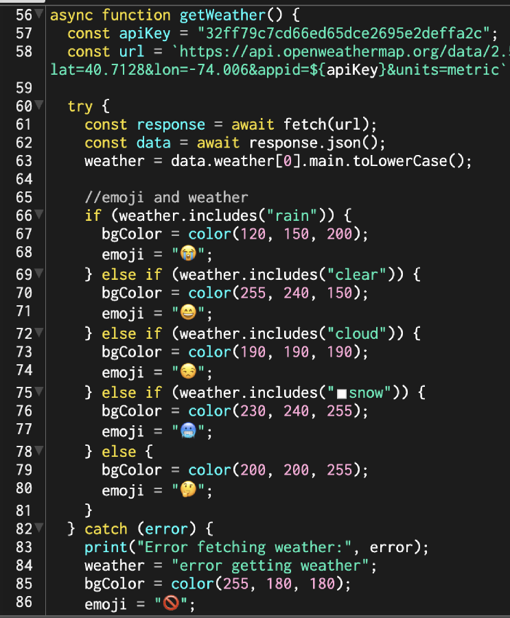
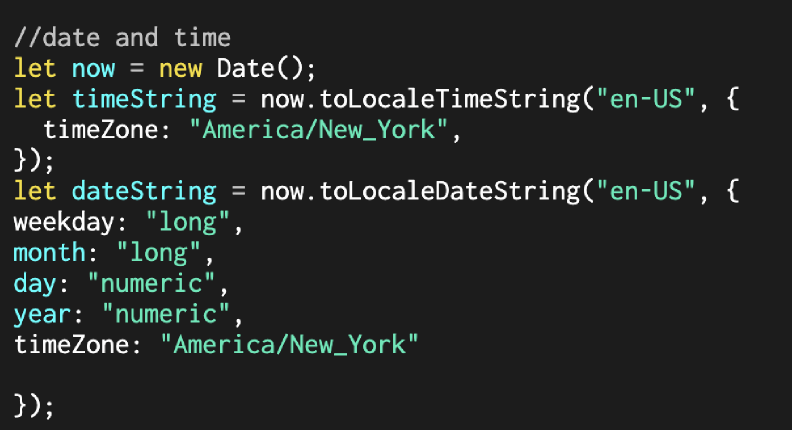
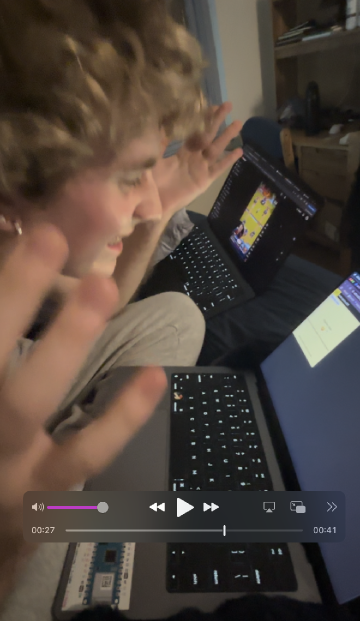

Most weather apps give you data. Under the Weather gives you attitude. "Rain" becomes "At least you have an excuse to cancel plans now." The question driving every decision: does this app feel unnecessary — not broken, just unhelpful by design?
Intentionally useless
Real data.
Nothing helpful.
My first p5.js project. The brief: build something that works perfectly and does absolutely nothing useful.
Under the Weather fetches live NYC weather from the OpenWeatherMap API, then responds with sassy one-liners instead of temperatures. It was an excuse to learn API calls, async JavaScript, and p5.js — wrapped in a concept about how people treat weather reports as emotional verdicts.
01 Concept
🌧 Rain
"At least you have an excuse to cancel plans now."
☀️ Clear
"Can't beat this weather. This is suspiciously perfect."
☁️ Cloud
"Where's the sun?"
❄️ Snow
"Stay home."
02 Under the Hood
getWeather() hits the OpenWeatherMap API and pulls live NYC conditions. generateMood() maps the weather string to a sassy response and a background color. A Date object locked to America/New_York handles the timestamp.
The entire emotional logic is eight lines of if/else. All the infrastructure — async fetch, timezone math, error handling, global state for p5.js — exists to serve eight sarcastic strings. That ratio is the joke.

getWeather() — API fetch + state

NYC timestamp — Date object
03 User Testing
Tested with Michael Ryan Leese. API worked and updated live. Colors and emojis matched conditions correctly.

Tried pressing the screen instead of the button
Fixed by rewriting the prompt text to make the button action explicit.
Suggested lat/long input for humor
Letting users type coordinates to check the weather somewhere they'll never go — absurdity that fits the tone.
"It's solving a problem that didn't need solving."